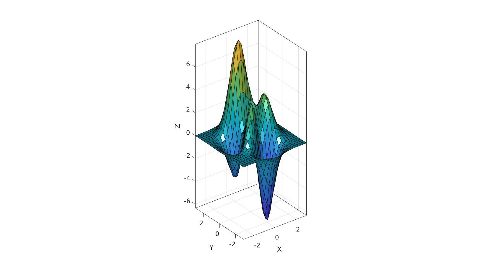
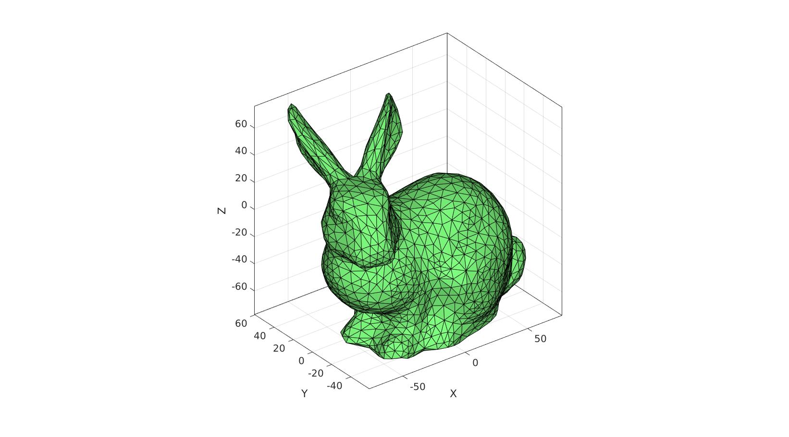
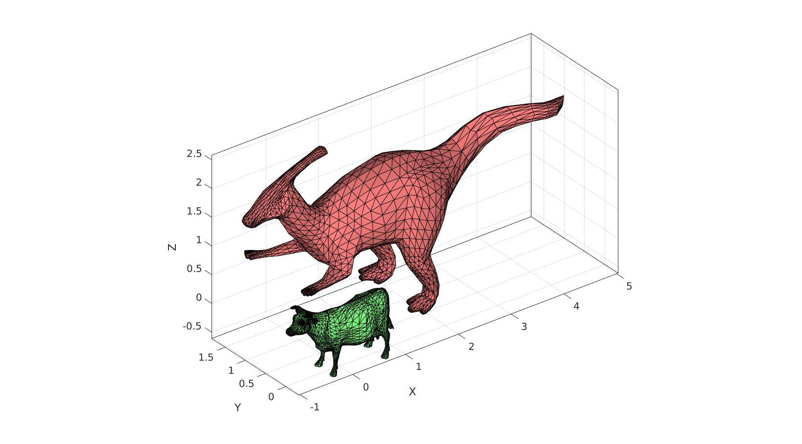
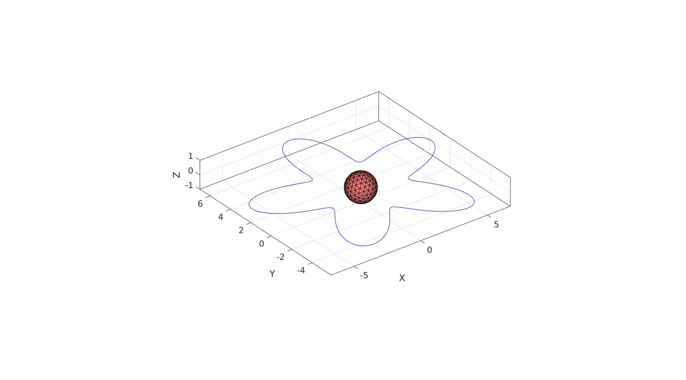
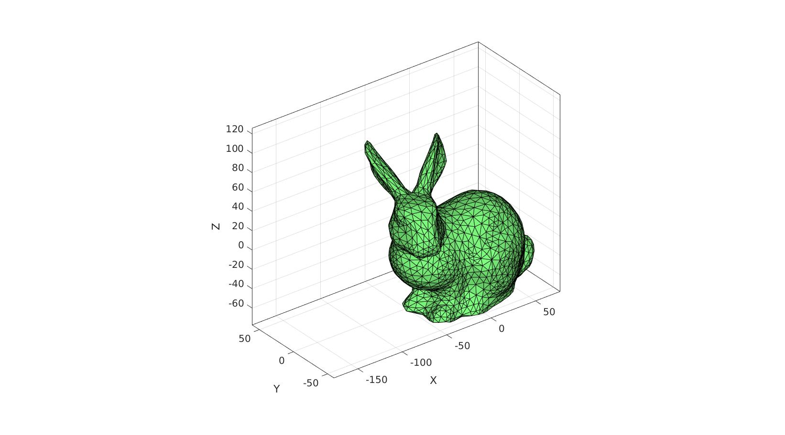
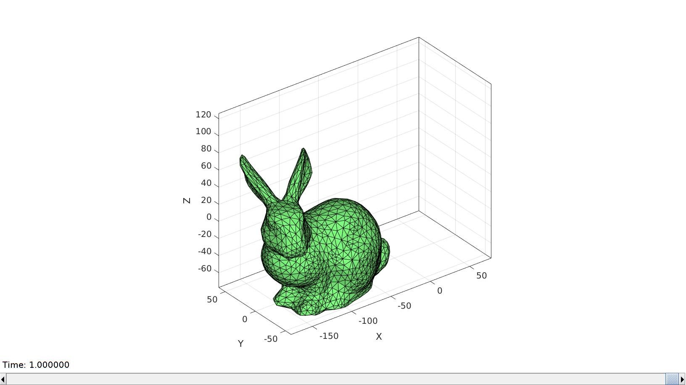

axisLim
Below is a demonstration of the features of the axisLim function
Contents
- Syntax
- Description
- Examples
- Example 1: setting axis limits tightly around a coordinate set in 2D
- Example 2: setting axis limits tightly around a coordinate set in 3D
- Example 3: setting axis limits tightly around multiple coordinate sets in 3D
- Example 3: setting axis limits tightly around multiple coordinate sets with varying dimensions
- Example 4: setting axis limits tightly for coordinates over time
clear; close all; clc;
Syntax
axLim=axisLim(V);
Description
This function computes appropiate axis limits for the input vertices V. The vertices may be an k x l x m array, where by by k is the number of vertices, l is the number of dimensions (e.g. 2 or 3), and m is for instance a time (or other) dimension. The function returs axLim which are appropriate axis limits such that the coordinates in V can be displayed appropriately (and in a tight fashion).
Examples
Example 1: setting axis limits tightly around a coordinate set in 2D
Create example data
t=linspace(0,2*pi,250)'; r=5+2*sin(5*t); V=r.*[cos(t) sin(t)];
Compute appropriate limits
axLim=axisLim(V) %Axis limits for vertices
axLim = -6.6976 6.7000 -5.8390 6.9989
Assign axis limits using axisLim
cFigure; plot(V(:,1),V(:,2),'b-'); axis equal; axis(axisLim(V)); drawnow;
Example 2: setting axis limits tightly around a coordinate set in 3D
Create example data
[F,V]=stanford_bunny;
Compute appropriate limits
axLim=axisLim(V) %Axis limits for vertices
axLim = -77.1042 77.6348 -59.4666 60.6226 -77.2629 76.0109
Assign axis limits using axisLim
cFigure;
gpatch(F,V);
axisGeom; camlight headlight;
axis(axisLim(V));
gdrawnow;
 Example 3: setting axis limits tightly around multiple coordinate sets in 3D
Create example data
[F1,V1]=graphicsModels(3); [F2,V2]=graphicsModels(4); V2=V2+1;
Compute appropriate limits
axLim=axisLim(V1,V2) %Axis limits for vertices
axLim = -1.0247 5.0281 -0.3258 1.8240 -0.6125 2.5817
Assign axis limits using axisLim
cFigure; hold on; gpatch(F1,V1,'gw'); gpatch(F2,V2,'rw'); axisGeom; camlight headlight; axis(axisLim(V1,V2)); gdrawnow;
Example 3: setting axis limits tightly around multiple coordinate sets with varying dimensions
Create example data
V1=r.*[cos(t) sin(t)]; [F2,V2]=geoSphere(2,1);
Compute appropriate limits
axLim=axisLim(V1,V2) %Axis limits for vertices
axLim = -6.6976 6.7000 -5.8390 6.9989 -1.0000 1.0000
Assign axis limits using axisLim
cFigure; hold on; plot(V1(:,1),V1(:,2),'b-'); gpatch(F2,V2,'rw'); axisGeom; camlight headlight; axis(axisLim(V1,V2)); gdrawnow;
Example 4: setting axis limits tightly for coordinates over time
[F,V]=stanford_bunny; %Some graphics data nSteps=50; t=linspace(0,pi,nSteps)'; U=[-100*t/pi zeros(nSteps,1) 50*sin(t)]; V_DEF=zeros(size(V,1),3,nSteps); for q=1:1:nSteps V_DEF(:,:,q)=V+U(q*ones(size(V,1),1),:); end
Compute appropriate limits
axLim=axisLim(V_DEF) %Axis limits for vertices
axLim = -177.1042 77.6348 -59.4666 60.6226 -77.2629 125.9853
Assign axis limits using axisLim
hf=cFigure; hp=gpatch(F,V,'gw'); axisGeom; camlight headlight; axis(axisLim(V_DEF)); %Set limits to be suitable across time drawnow;
Use anim8 to animate the scene
animStruct.Time=linspace(0,1,nSteps); %Time vector for q=1:1:nSteps %Set entries in animation structure animStruct.Handles{q}=hp; %Handles of objects to animate animStruct.Props{q}={'Vertices'}; %Properties of objects to animate animStruct.Set{q}={V_DEF(:,:,q)}; %Property values for to set in order to animate end % Start |anim8| gui anim8(hf,animStruct);

GIBBON www.gibboncode.org
Kevin Mattheus Moerman, gibbon.toolbox@gmail.com
GIBBON footer text
License: https://github.com/gibbonCode/GIBBON/blob/master/LICENSE
GIBBON: The Geometry and Image-based Bioengineering add-On. A toolbox for image segmentation, image-based modeling, meshing, and finite element analysis.
Copyright (C) 2006-2022 Kevin Mattheus Moerman and the GIBBON contributors
This program is free software: you can redistribute it and/or modify it under the terms of the GNU General Public License as published by the Free Software Foundation, either version 3 of the License, or (at your option) any later version.
This program is distributed in the hope that it will be useful, but WITHOUT ANY WARRANTY; without even the implied warranty of MERCHANTABILITY or FITNESS FOR A PARTICULAR PURPOSE. See the GNU General Public License for more details.
You should have received a copy of the GNU General Public License along with this program. If not, see http://www.gnu.org/licenses/.